TD2 - BRDF de Ward
Eclairage direct
Dans cette première partie, il était simplement question d'implémenter le calcul de la BRDF de Ward dans la classe Ward. Une fois la formule implémentée, on peut faire varier les paramètres AlphaX et AlphaY pour obtenir différents résultats, en voici quelques exemples :
aX = 0.01 aY = 0.01
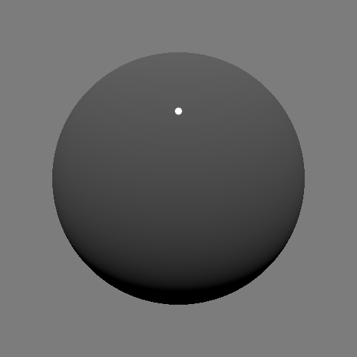aX = 0.1 aY = 0.5
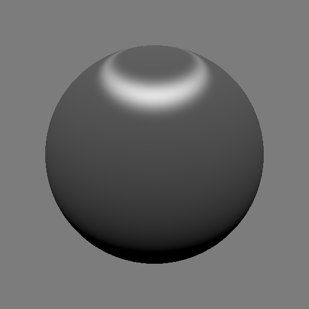aX = 0.5 aY = 0.1
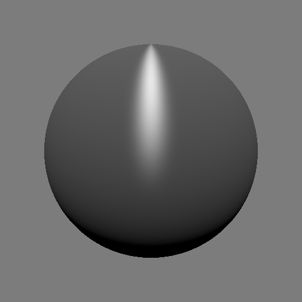Échantillonnage uniforme de la BRDF
Ici, on se proposait de créer un nouvel intégrateur : DirectMats. Cet intégrateur utiliserait notre précédent calcul de la BRDF. Cette partie étant déjà incluse dans les fichiers originaux du TP, on ne s'attardera pas dessus. Seules quelques lignes de codes étaient à modifier/commenter pour obtenir une compilation. Les résultats sur la sphère et l'envMap ci-dessous :
aX = 0.01 aY = 0.01
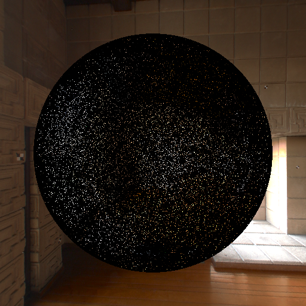aX = 0.1 aY = 0.5

aX = 0.5 aY = 0.1
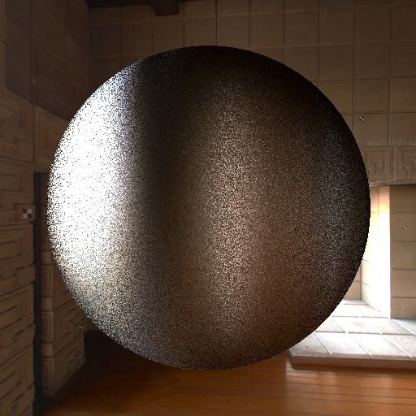Échantillonnage préférentiel
Maintenant, on se propose d'implémenter de l'importance sampling. Cette technique vise à concentrer l'échantillonnage dans une zone qui contribuera fortement au résultat final. On aura donc moins de rayons "perdus" générant du bruit.
Il était tout d'abord question de tester l'effet de cet importance sampling en affichant les rayons générés. Voici quelques résultats en fonction de alphaX et aklphaY :
aX = 0.01 aY = 0.01
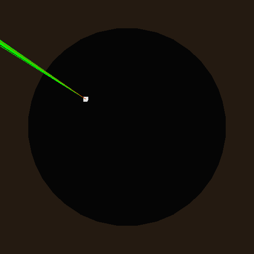aX = 0.1 aY = 0.5
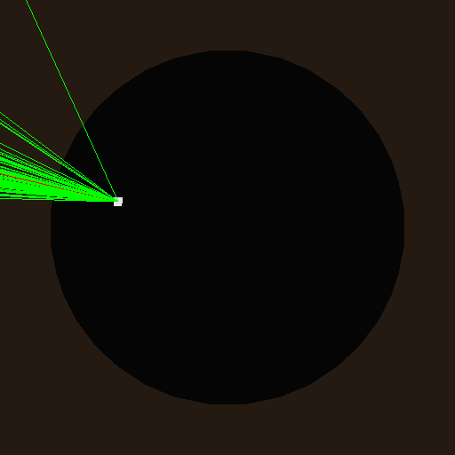aX = 0.5 aY = 0.1
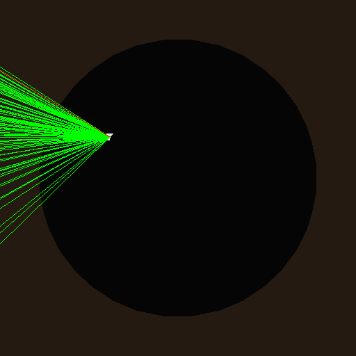Les résultats semblent cohérents, en particulier celui pour alphaX=alphaY=0.01. Cependant, il semble sur certaines image que les rayons ne couvrent qu'une moitié de l'hémisphère. Ce phénomène est encore plus flagrant sur les images suivantes utilisant l'importance sampling pour la scène de la sphère. On voit bien une séparation entre la partie supérieure de la sphère, correctement calculée, et la partie inférieure qui ne ressemble pas aux exemples de résultats de la page du TD. Je n'ai pas su résoudre ce problème.
aX = 0.01 aY = 0.01
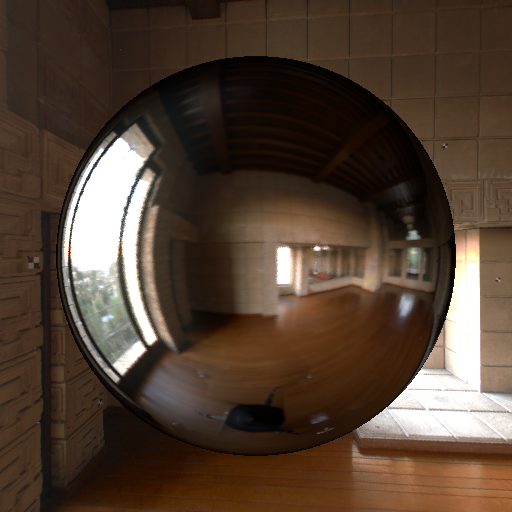aX = 0.1 aY = 0.5
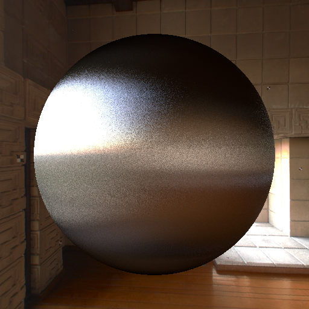aX = 0.5 aY = 0.1
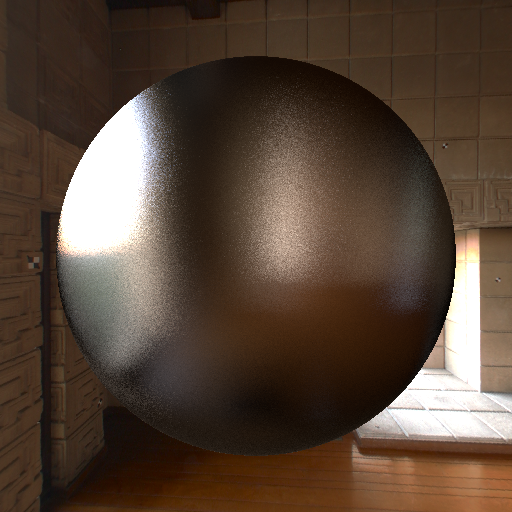